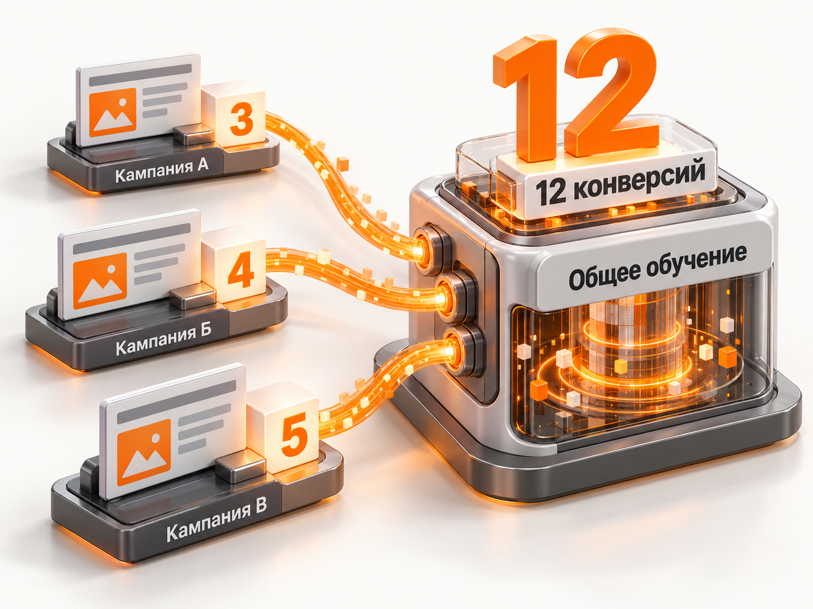

Блог о платном трафике
Пакетная стратегия в Яндекс Директе: как настроить и когда использовать
Пакетная стратегия в Яндекс Директе позволяет объединить несколько рекламных кампаний под одним автоматическим управлением. Кампании используют общую статистику для обучения стратегии, а рекламодатель может задать для них единые параметры оптимизации и общий бюджет.
Главная задача инструмента - помочь кампаниям, которым по отдельности не хватает конверсий для стабильной работы алгоритма. По справке Яндекса, для лучшей оптимизации пакетной стратегии желательно получать не менее 10 конверсий в неделю суммарно по всем добавленным кампаниям.
Но объединение само по себе не снижает стоимость заявки. Если проблема связана с нецелевым трафиком, неправильными целями, слабым предложением или недостаточным бюджетом, пакетная стратегия её не исправит.
Чем пакетная стратегия отличается от обычной
Основное отличие пакетной стратегии от обычной заключается в уровне управления рекламой. Обычная автоматическая стратегия настраивается для одной кампании, а пакетная объединяет управление несколькими кампаниями.
При этом объявления, ключевые фразы, таргетинги и статистика отдельных кампаний сохраняются. Не нужно физически объединять рекламные объявления в одну кампанию.
| Параметр | Обычная стратегия | Пакетная стратегия |
|---|---|---|
| Управление | Одна кампания | Несколько кампаний |
| Данные для обучения | Статистика отдельной кампании | Конверсии всего пакета участвуют в обучении |
| Параметры оптимизации | Настраиваются отдельно | Единые параметры для пакета |
| Бюджет | Отдельный для кампании | Общий для пакета при использовании недельного бюджета |
| Распределение расходов | В пределах одной кампании | Между кампаниями с учётом эффективности |
| Объявления и таргетинги | Индивидуальные | Остаются индивидуальными |
Например, можно оставить отдельные кампании для разных категорий товаров, но управлять их обучением и бюджетом через одну пакетную стратегию.
Это полезно, когда разделение рекламы необходимо для аналитики и управления, а объёма статистики в каждой кампании недостаточно.
Как работает обучение пакетной стратегии
Пакетная стратегия использует конверсии всех подключённых кампаний для обучения общего алгоритма.
Предположим, интернет-магазин рекламирует три товарные категории. Все кампании оптимизируются на одну бизнес-цель - оформление заказа.
За неделю получены следующие результаты:
| Кампания | Конверсии за неделю |
|---|---|
| Категория А | 3 |
| Категория Б | 4 |
| Категория В | 5 |
| Всего | 12 |
Каждая кампания получает относительно мало заказов. Однако в сумме по трём кампаниям получается 12 целевых действий за неделю.

Общие данные позволяют алгоритму обучаться на конверсиях нескольких кампаний.
Если объединить такие кампании в пакет, алгоритм сможет учитывать конверсии всех трёх направлений при оптимизации.
Это особенно полезно, когда рекламный аккаунт разделён по товарным категориям, регионам или местам показов.
Сколько конверсий нужно для пакетной стратегии
Официальный ориентир Яндекса - не менее 10 конверсий в неделю суммарно по пакету.
Важно понимать два ограничения.
Во-первых, 10 конверсий не гарантируют успешного обучения. Это ориентир для оптимизации, а не обещание определённой стоимости заявки.
Во-вторых, значение имеет не только количество событий, но и их качество. Если система получает десятки просмотров страниц вместо реальных обращений, формально статистики много, но бизнесу она может не приносить пользы.
При наличии 2‑3 конверсий в неделю на весь пакет проблема недостатка данных вряд ли исчезнет.
Подробнее об этом механизме я рассказывал в статье «Обучение стратегии в Яндекс Директе».
Какие кампании можно объединить в пакетную стратегию
В актуальном интерфейсе Яндекс Директа пакетные стратегии доступны для Единой перфоманс-кампании (ЕПК), кроме кампаний с показами в мессенджерах и кампаний для продвижения приложений.
В рамках одной пакетной стратегии можно объединить до 100 кампаний одного типа.
Доступны три варианта автоматического управления:
- «Максимум кликов», когда основная задача заключается в привлечении трафика.
- «Максимум конверсий», когда реклама оптимизируется на целевые действия.
- «Максимум прибыли», когда оптимизация ориентирована на прибыль от продвижения.
Для «Максимума конверсий» пакетная стратегия поддерживает как оплату за клики, так и оплату за конверсии.
В один пакет ЕПК можно включить кампании с разными местами показов, например отдельные кампании на Поиске и в РСЯ. Но техническая возможность объединения ещё не означает, что это правильно с точки зрения экономики бизнеса.
Я бы прежде всего проверял три условия:
- Кампании решают близкую бизнес-задачу.
- Конверсии имеют сопоставимую ценность для бизнеса.
- Рекламодатель готов использовать общие ограничения стратегии и перераспределять бюджет между направлениями.
Если эти условия соблюдаются, объединение имеет практический смысл.
Когда пакетная стратегия действительно полезна
Первый сценарий - несколько небольших кампаний, которым по отдельности не хватает целевых действий.
Например, рекламодатель продвигает несколько похожих услуг в разных регионах. Кампании разделены, поскольку требуется отдельная аналитика, разные объявления и географические настройки.
При этом экономика заявок в регионах достаточно близкая. Если в сумме кампании получают достаточно качественных конверсий, пакет может помочь решить проблему раздробленного обучения.
Второй сценарий - запуск нового направления рядом с уже работающими кампаниями.
Яндекс указывает, что новая кампания, добавленная к действующей пакетной стратегии, может быстрее выйти на заданные показатели оптимизации благодаря накопленным данным пакета.
Третий сценарий - использование единого бюджета.
Например, интернет-магазину не принципиально, какая из нескольких сопоставимых категорий получит большую долю рекламы. Важнее общая эффективность продаж.
В таком случае пакетная стратегия позволяет алгоритму самостоятельно распределять расходы между направлениями.
Однако эти сценарии имеют смысл только при правильно настроенной аналитике и подходящей экономике кампаний.
Как распределяется бюджет между кампаниями
При работе с общим недельным бюджетом пакетная стратегия распределяет расходы между подключёнными кампаниями с учётом их эффективности.
Допустим, рекламодатель выделяет 60 000 рублей в неделю на три кампании, которые объединены в пакет.
Это единый бюджет всего пакета, а не по 60 000 рублей для каждой кампании.
Алгоритм самостоятельно определяет, какая доля средств будет направлена на каждую кампанию. Распределение не обязано быть равномерным.
Распределение бюджета зависит от эффективности кампаний и не обязано быть равномерным.
Если одно направление получает конверсии дешевле и эффективнее остальных, оно может привлекать большую часть расходов.
Если другая кампания приносит дорогие конверсии или перестаёт получать результаты, алгоритм может снизить для неё ставки.
По документации Яндекса, в такой ситуации кампания не обязательно полностью останавливается. Она может продолжать показы с минимальными ставками.
Отсюда следует важное ограничение: пакетная стратегия не подходит для задач, где необходимо гарантированно расходовать определённую сумму на каждое направление.
Например, если бизнесу нужно обязательно продвигать новую услугу, даже когда старые направления обеспечивают более дешёвые заявки, общий бюджет может оказаться неудобным.
Также стоит учитывать, что настройка автоматической адаптации бюджета, доступная для некоторых обычных стратегий, по состоянию на октябрь 2026 года для пакетных стратегий не поддерживается.
Когда кампании лучше не объединять
Главная причина отказаться от пакетной стратегии - различная экономика рекламируемых направлений.
Представим две услуги:
- Первая приносит заявки по 2000 рублей, и такая стоимость для бизнеса приемлема.
- Вторая приносит заявки по 15 000 рублей, но за счёт высокой стоимости услуги эти обращения также могут быть прибыльными.
Если объединить направления под общими ограничениями CPA, алгоритм не будет автоматически понимать всю разницу в экономике бизнеса.
При одинаковой цели более дешёвые конверсии могут получать преимущество. В результате дорогая, но потенциально более прибыльная услуга рискует остаться без необходимого объёма трафика.
В такой ситуации разумнее использовать отдельные стратегии или подход к оптимизации, который корректно учитывает ценность конверсий.
Кампании с разной допустимой стоимостью привлечения не всегда стоит объединять под общими ограничениями.
Ещё несколько ситуаций, когда объединение вызывает сомнения:
- Кампании ориентированы на принципиально разные бизнес-результаты.
- У направлений существенно различаются допустимая стоимость заявки и маржинальность.
- Нужно обеспечить фиксированный объём рекламного присутствия для каждого продукта.
- В одной кампании корректно настроена аналитика, а в другой цели передаются с ошибками.
- Суммарного количества качественных конверсий всё равно недостаточно для обучения.
Особенно осторожно я бы объединял Поиск и РСЯ.
Это разные источники трафика, у которых могут отличаться конверсионность, стоимость обращения и качество заявок.
Если общая оптимизация начинает отдавать преимущество одному источнику, необходимо проверять не только общий CPA, но и вклад каждого источника в продажи.
Как создать пакетную стратегию в Яндекс Директе
Создание пакетной стратегии выполняется через библиотеку Яндекс Директа или настройки рекламной кампании.
Порядок действий:
- Откройте Яндекс Директ и перейдите в раздел «Библиотека», затем выберите «Пакетные стратегии».
- Создайте новую пакетную стратегию и укажите понятное название.
- Выберите тип автоматической стратегии: «Максимум кликов», «Максимум конверсий» или «Максимум прибыли».
- Настройте доступные параметры оптимизации, цели и ограничения. При использовании недельного бюджета рассчитывайте его сразу на все кампании.
- В блоке «Кампании, к которым применяется пакетная стратегия» нажмите «Добавить» и выберите подходящие кампании.
При создании пакета сначала выбирают стратегию и общие параметры, затем подключают кампании.
После настройки проверьте список подключённых кампаний и параметры стратегии.
Подключить готовый пакет можно и из настроек отдельной кампании. Для этого в блоке «Стратегии» нужно перейти на вкладку «Пакетные» и выбрать созданную стратегию.
Существует также вариант создания пакета на основе обычной стратегии, которая уже используется в другой кампании.
В этом случае на вкладке «Пакетные» выбирается вариант «Из другой кампании», после чего указывается исходная кампания.
Так можно использовать уже настроенную стратегию как основу пакета, не создавая все параметры заново.
Что произойдёт с обучением существующих кампаний
При подключении работающей кампании к пакетной стратегии меняется используемая система автоматического управления.
Из-за этого эффективность рекламы после перехода может измениться.
Однако Яндекс уточняет, что ранее накопленные данные обучения сохраняются в системе и учитываются при управлении ставками.
Поэтому неверно утверждать, что после подключения к пакету вся история кампании полностью обнуляется.
Но сохранение исторических данных не означает, что переход пройдёт без периода адаптации.
Алгоритму может понадобиться время, чтобы перестроить управление с учётом новых параметров и остальных кампаний.
Я бы не подключал стабильно работающую кампанию к пакету просто ради эксперимента. Сначала нужно понять, какую конкретную проблему решает изменение.
Если существующая стратегия уже обеспечивает нужные продажи и стоимость привлечения, дополнительное объединение может не дать преимуществ.
Как проверить эффективность пакетной стратегии
Оценивать работу пакета нужно по результатам рекламы, а не по самому факту объединения кампаний.
После запуска важно контролировать показатели как суммарно, так и по отдельным рекламным кампаниям.
Основные показатели:
| Показатель | Что проверять |
|---|---|
| Конверсии | Изменилось ли количество целевых действий |
| CPA | Стала ли ниже или стабильнее стоимость конверсии |
| Расходы | Как бюджет распределяется между кампаниями |
| Качество заявок | Не выросла ли доля нецелевых обращений |
| Продажи | Улучшился ли конечный бизнес-результат |
| Объём трафика | Не потеряли ли важные направления показы и клики |
Статистика пакета доступна в «Библиотеке пакетных стратегий».
В «Мастере отчётов» можно выбрать группировку «Тип стратегии» и фильтр «Пакетная стратегия».
Для анализа отдельных кампаний используйте группировки по номеру или названию кампании.
Как сравнить результаты до и после объединения
Практически я бы начинал со сравнения сопоставимых периодов до и после перехода.
Например, можно взять две-четыре недели стабильной работы до изменения и аналогичный период после того, как новая стратегия получила время на адаптацию.
Это методика оценки, а не установленный Яндексом срок обязательного обучения.
При сравнении необходимо учитывать изменения спроса, рекламного бюджета, сезонности и других условий.
Если одновременно с переходом на пакет поменялись посадочная страница, цена продукта, цели Метрики и объявления, определить эффект именно пакетной стратегии будет сложно.
Я бы особенно внимательно проверял ситуации, когда общий CPA снизился, но часть кампаний практически перестала получать трафик.
Формально пакет может выглядеть эффективнее, однако для бизнеса потеря отдельного направления не всегда приемлема.
Также снижение стоимости заявки не означает улучшения экономики, если качество обращений стало хуже.
Подробнее о проверке результата рекламы написано в статье «Как оценить эффективность Яндекс Директа».
Как отключить пакетную стратегию
Чтобы вывести отдельную кампанию из пакетной стратегии, откройте её настройки и перейдите к блоку «Стратегии».
Вместо варианта «Пакетная» выберите «Обычная», после чего задайте необходимые параметры самостоятельной стратегии.
Перед сохранением проверьте цели, бюджет и ограничения.
Это важно, поскольку после выхода из пакета кампания снова будет использовать собственные параметры управления, а изменение стратегии может потребовать адаптации алгоритма.
Удалять саму рекламную кампанию для выхода из пакета не требуется.
Стоит ли использовать пакетную стратегию
Пакетная стратегия полезна прежде всего тогда, когда несколько рекламных кампаний решают сопоставимые задачи, но каждая по отдельности получает слишком мало конверсий для стабильной оптимизации.
В такой ситуации объединение данных может помочь алгоритму. Дополнительным преимуществом становится возможность управлять несколькими кампаниями через общий бюджет.
Но я бы не использовал пакетную стратегию как универсальное решение проблем рекламы.
Если конверсий мало из-за слабого спроса, неправильных целей, некачественного трафика или плохо работающего сайта, объединение кампаний не устранит первоначальную причину.
Сначала стоит проверить аналитику, настройки и экономику. И только после этого принимать решение о пакетной стратегии.
Главный критерий успеха - не количество объединённых кампаний, а качественные заявки, продажи и стоимость привлечения клиента.